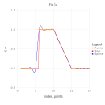
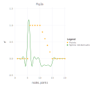
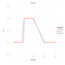
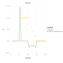

Example Usage
1D interpolation case
Let's interpolate function $f(x)$
\[f(x) =
\begin{cases}
0 \, , & 1 \le x \lt 6 \\
1 \, , & 6 \le x \le 10 \\
-x/5 + 3 \, , & 6 \le x \le 15 \\
0 \, , & 15 \le x \le 20
\end{cases}\]
by values of the function in nodes $\{1, 2, 3, ..., 20\}$ (case A) and by values of the function and values of its first derivatives in the same nodes (case B).
A)
using NormalHermiteSplines
x = collect(1.0:1.0:20) # function nodes
u = x.*0.0 # function values in nodes
for i in 6:10
u[i] = 1.0
end
for i in 11:14
u[i] = -0.2 * i + 3.0
end
# Build a differentiable spline by values of function in nodes
# (a spline built with RK_H0 kernel is a continuous function,
# a spline built with RK_H1 kernel is a continuously differentiable function,
# a spline built with RK_H2 kernel is a twice continuously differentiable function).
# Here value of the 'scaling parameter' ε is estimated in the interpolate procedure.
spline = prepare(x, RK_H1())
# An estimation of the Gram matrix condition number
cond = get_cond(spline)1.0e7 # A value of the 'scaling parameter' of Bessel Potential space
# the normal spline was built in.
ε = get_epsilon(spline)0.7125346243561634 spline = construct(spline, u)
p = collect(1.0:0.2:20) # evaluation points
σ = evaluate(spline, p)
dσ = similar(p)
for i=1:length(p)
dσ[i] = evaluate_derivative(spline, p[i])
end
Evaluate the spline at some points:
p = [3.1, 8.1, 12.1, 18.1]
σ = evaluate(spline, p)4-element Array{Float64,1}:
0.005233851099164077
1.0029716012507652
0.5803978696510903
0.0001617014038890474Evaluate the spline derivatives at the same points:
dσ = similar(p)
for i=1:length(p)
dσ[i] = evaluate_derivative(spline, p[i])
end
dσ4-element Array{Float64,1}:
0.05769978169934188
0.021648276557790103
-0.19742466976722037
0.0013127826500212245Construct spline by different function values in nodes and evaluate new spline at the same evaluation points:
u2 = 2.0 .* u
spline = construct(spline, u2)
σ = evaluate(spline, p)4-element Array{Float64,1}:
0.010467702198328155
2.0059432025015305
1.1607957393021806
0.0003234028077780948B)
using NormalHermiteSplines
x = collect(1.0:1.0:20) # function nodes
u = x.*0.0 # function values in nodes
for i in 6:10
u[i] = 1.0
end
for i in 11:14
u[i] = -0.2 * i + 3.0
end
s = x # function first derivative nodes
v = x.*0.0 # function first derivative values
for i in 11:14
v[i] = -0.2
end
# Build a differentiable spline by values of function,
# and values of its first derivatives in nodes
# (a spline built with RK_H0 kernel is a continuous function,
# a spline built with RK_H1 kernel is a continuously differentiable function,
# a spline built with RK_H2 kernel is a twice continuously differentiable function).
# Here value of the 'scaling parameter' ε is estimated in the interpolate procedure.
spline = interpolate(x, u, s, v, RK_H1())
p = collect(1.0:0.2:20) # evaluation points
σ = evaluate(spline, p)
dσ = similar(p)
for i=1:length(p)
dσ[i] = evaluate_derivative(spline, p[i])
end
Evaluate the spline at some points:
p = [3.1, 8.1, 12.1, 18.1]
σ = evaluate(spline, p)4-element Array{Float64,1}:
-3.481659405224491e-12
0.9999999960782304
0.5799999979738288
-2.2737367544323206e-12Evaluate the spline derivatives at the same points:
dσ = similar(p)
for i=1:length(p)
dσ[i] = evaluate_derivative(spline, p[i])
end
dσ4-element Array{Float64,1}:
7.000715796541619e-13
-6.969127609504778e-8
-0.20000003580349512
-1.234100541057016e-132D interpolation case
.... ....
3D interpolation case
Choice of the scaling parameter
aa
Q & A
ss